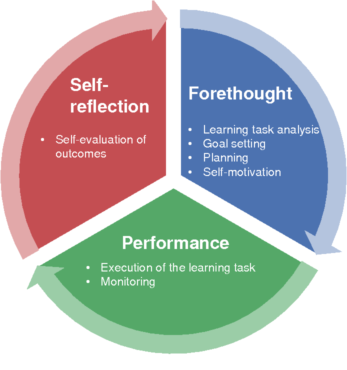

Design and Evaluation of a Student-Facing Learning Dashboard Using Self-Regulated Learning Theory
Empowering Students: Data to Insights
Online learning has become a strong solution for educational institutions to save money and offer courses with more flexibility. The use of online learning platforms generates a goldmine of data on how students navigate the system and progress through their academic studies.
In my Master Thesis Project, I focused on how we can develop a learning dashboard for TU/e's Canvas-platform
in a way that is grounded in learning sciences and truly facilitates online learning. Through an iterative user-centered design approach - using frameworks from
self-regulated learning theory - I designed and
implemented a learning dashboard for TU/e's (Eindhoven University of Technology) online learning platform Canvas. The dashboard visualizes academic performance and provides dynamic, course-level
recommendations on how students can improve their learning (i.e., based on aggregate models of clickstream-data
and historical academic results).
Self-Regulated Learning
Self-regulated learning is about taking control of your learning journey. It involves setting goals and planning how to achieve them. As you work towards your goals, you monitor your progress and adjust your strategies to improve. After each learning experience, you reflect on how well you did and use that insight to set new goals and improve your learning methods. These skills, like goal-setting and self-assessment, are crucial for academic success and skill development. Knowing this, how can we facilitate self-regulated learning for students that are learning online?

My Research Project
Even though many learning dashboards argue the core of their designs to be based on self-regulated learning theory, their implementations differ substantially and yield different cognitive and affective learning outcomes. In my research project, I looked at how different implementations of self-regulated learning theory in learning dashboards affect students' thinking and feelings about their learning as well as how they progress academically in the long-term. To be able to do this, I implemented a learning dashboard specifically designed with and for students at Eindhoven University of Technology (TU/e) in collaboration with the university's Information Management Services-department. This study followed a user-centered design approach, using student feedback to shape the dashboard features for each stage of self-regulated learning.
Design Process
While many learning dashboard studies consider what students need, only a few actually ask students what they need. Learning dashboards aim to help students learn better, so it makes sense to involve students in the design process. I talked to students at TU/e and used their input, along with information from previous research, to create a new dashboard for Canvas, the university's learning system. Through an iterative user-centered design process - including several phases of user interviews, creating personas, storytelling, wireframing, and prototyping - I created several designs in AdobeXD that differed in the extent to which they theoretically supported self-regulated learning and how they met the needs as proposed by students themselves. I then compared and further improved these designs through A/B- and usability-testing, and I presented my work to all stakeholders involved in the project continuously while using their feedback to steer course when necessary.
Eventually, I implemented the dashboard fully in PowerBI and HTML/CSS/JavaScript using real clickstream data that was generated from students' use of university's learning management system as well as records of their academic progress such as their grades and submissions. The dashboard is also fully designed according to the TU/e house style and branding regulations. Eventually, the dashboard was enrolled for all participating students in one of the university's Bachelor programs. The dashboard used real-time data from students using an Azure Databricks connection and single sign-on with the TU/e's learning management system. The different versions of the dashboard were then evaluated and compared using a variety of usability metrics as well as cognitive and affective learning outcomes.
Final Product
The final version of the TU/e Learning Dashboard focused on improving the self-regulated learning experience for students. To achieve this, data was collected from Canvas, the learning management system at TU/e. This data included clickstream information, grades, submissions, and other relevant indicators, all in pseudonymized format.To make sense of this data and provide students with valuable insights, PowerBI was used to create aggregate tables to streamline the information, including a simplified online activity table and a course results table. Features that were implemented aligned with the different phases of self-regulated learning theory, but designed in a way that met the needs that the students reported themselves.
Forethought-features: to help students plan their studies effectively. When students first logged in, they could set their grade goals using a slider. This goal influenced the subsequent "What's next" functionality, tailoring the experience to their objectives.
Performance-features: provide visualizations of students' online activity, gradebook, and course progression. These visualizations were based solely on each student's individual data, ensuring objectivity and relevance.
Self Evaluation-features: In the "What's next" panel, students could access self-reflection features. These features included insights into how other students with similar grade goals accessed course materials and utilized Canvas differently.
Conclusion
I explored how providing support for all three phases of self-regulated learning in a design affects cognitive and affective learning outcomes differently compared to only supporting the performance phase. By doing so, my goal was to provide targeted design recommendations that could resolve some of the shortcomings in current learning dashboards designs. With the progressive growth of online education, it's becoming increasingly important to design technologies that can facilitate effective learning experiences. And I believe that learning dashboards have a crucial role to play in this regard, helping students access key information about their progress and performance.
Success!
The project was such a success that it's currently being implemented at the Eindhoven University of Technology for students to use within their Canvas-environment. The research paper - which discusses in detail a literature review of self-regulated learning theory and an extensive illustration of the design and research methodologies (i.e., including the results from the qualitative and quantitative analyses) - will be published in the Learning Analytics and Knowledge Conference-journal and has been used as inspiration for multiple MSc Human-Technology Interaction theses after my original publication.